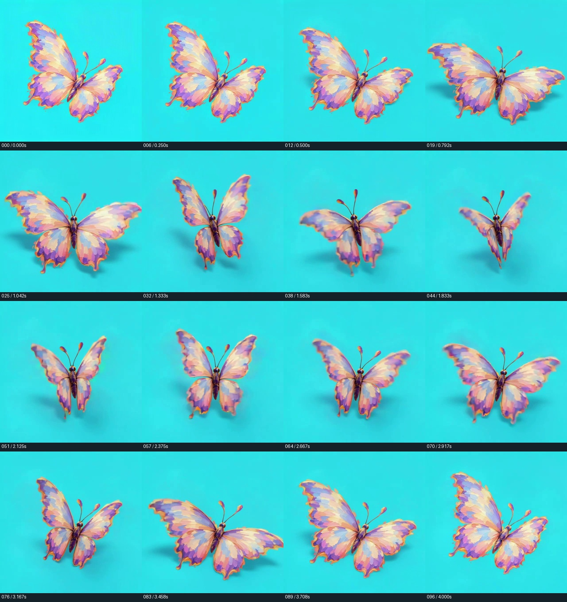
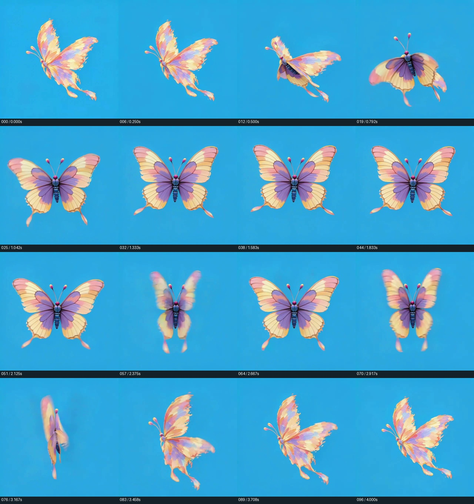
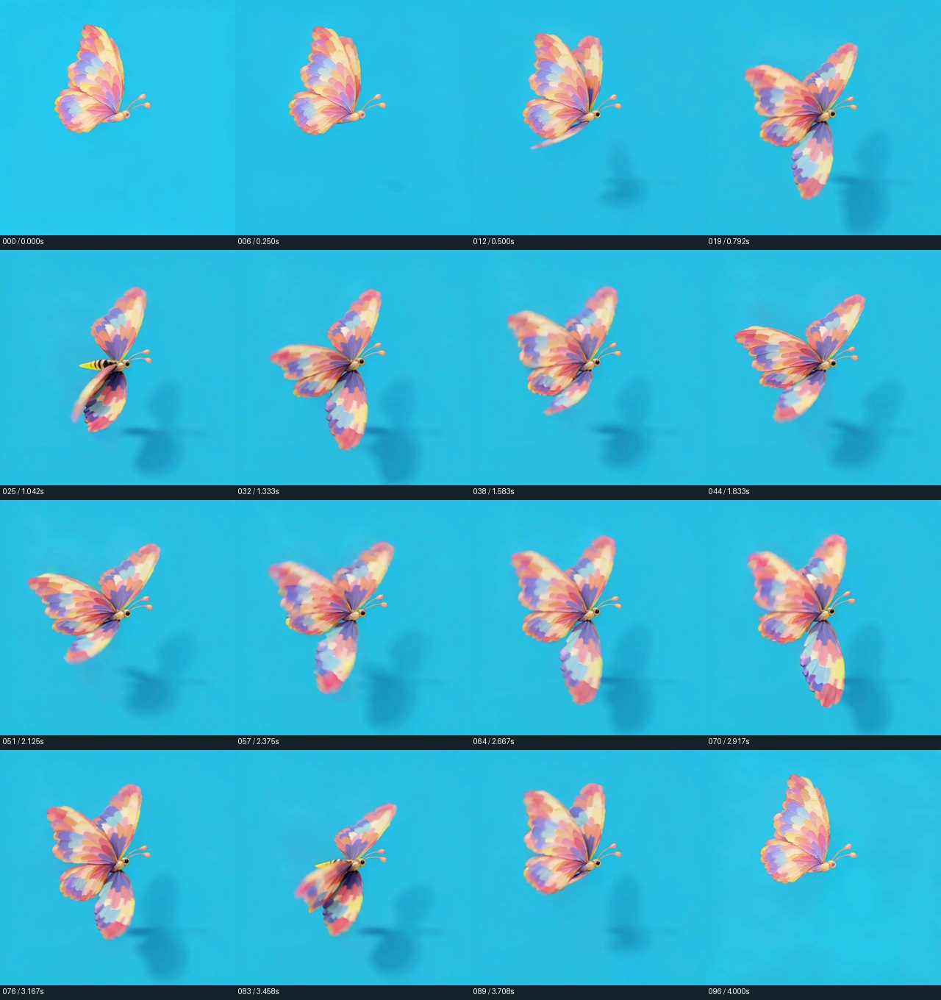
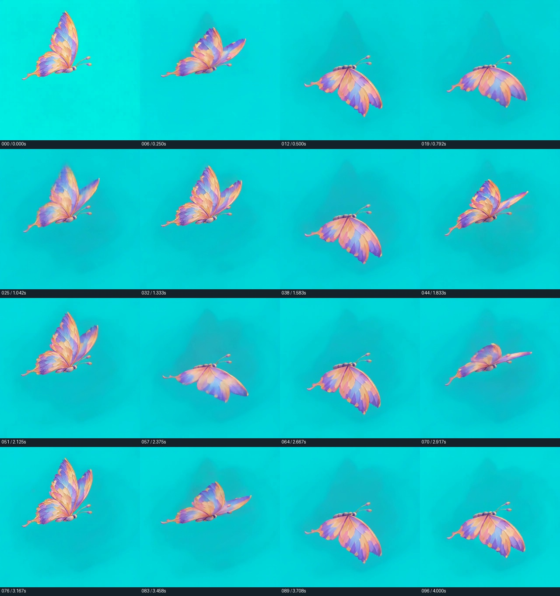

NEW ART + WINGBEATS · 2026-10-28 · v97
붓질과 색면으로 다시 그린 나비
추상 유화 느낌을 크게 강화했습니다. 날개 맥·보석·비늘 무늬를 덜어내고, 두꺼운 붓질과 따뜻한 오팔 색면으로 표현했습니다.
아래에서 실제 날개 접기·펼치기 생성 결과와 불합격 사유를 확인할 수 있습니다. 동작 확인용3초 후보를 공개했으며 게임용 최종 알파와 전체4종 교체는 완료 전입니다.
새로 생성한 실제 날갯짓 · v97
승인된 최초4편을 생성했습니다. 견적 누계는9.2/9.6크레딧이며 유료 재시도와 업스케일은0회입니다. 생성 완료와 품질 합격을 구분합니다.
실제 날갯짓 · 3초 동작 확인용
04 나비의 온전한 1초 날갯짓을 원래 속도로 세 번 연결했습니다. 날개가 몸통 연결부에서 접혔다 펼쳐집니다. 역재생·이미지 전체 흔들기·형태 보간을 사용하지 않았습니다.
480×480 · 보색 키 · 3초 루프PNG 알파 파생 영상 · 가장자리 보정 검토 중밝은 배경 · 같은 알파 후보
동작 확인용 후보입니다. 알파 가장자리의 청록 잔색·흐림 보정과 사용자 확인 전이며, 에디터·게임에 적용하지 않았습니다.
3초 키 영상 받기 PNG 알파 72장 · 검토용 5회 반복 · 15초 영상
몸통 방향 고정을 위해 보완한 측면 입력4종
01 · 불합격 · 게임 사용 제외
날개를 접고 펼치는 동작은 있으나 몸통이 원래 대각선에서 정면·수직으로 회전하고 그림자가 생성됨. 시작·끝 정지 구간과 박자 변화가 있어 게임 루프로 불합격.
실제로 입력한 이미지 새 Higgsfield 생성 원본 · seedance1_5원본 16시점 · 확대 가능
새 Higgsfield 생성 원본 · seedance1_5원본 16시점 · 확대 가능
640×640 실제 출력 · 24fps · 97프레임 · 작업 c636a8d6-a017-441e-8b43-ecc04885736e
02 · 불합격 · 게임 사용 제외
몸통이 정면으로 돌아가고 유화 색면이 매끈한 사실적 날개 무늬·새 몸통으로 바뀜. 긴 정지와 불규칙한 날갯짓으로 불합격.
실제로 입력한 이미지 새 Higgsfield 생성 원본 · seedance1_5원본 16시점 · 확대 가능
새 Higgsfield 생성 원본 · seedance1_5원본 16시점 · 확대 가능
640×640 실제 출력 · 24fps · 97프레임 · 작업 65c1008f-57c4-4468-8c9e-d1f23a906f05
03 · 불합격 · 게임 사용 제외
측면 입력에서도 새로운 노랑·검정 줄무늬 몸통과 그림자가 나타남. 원본의 단순 유화 몸통·고정 방향이 유지되지 않아 불합격.
실제로 입력한 이미지새 Higgsfield 생성 원본 · seedance1_5원본 16시점 · 확대 가능
640×640 실제 출력 · 24fps · 97프레임 · 작업 8124c038-5a5b-4eed-ac30-4e934310ed5f
04 · 원본 검토용 · 게임 미적용
실제 측면 날갯짓 원본에서 프레임26–49의 온전한 1초 주기를 선택해 원속도로3회 연결했습니다. 동작 확인용3초 후보이며, 알파 가장자리의 청록 잔색·흐림은 보정 검토 중입니다. 최종 게임 소스로 승인하지 않았습니다.
실제로 입력한 이미지새 Higgsfield 생성 원본 · seedance_2_0_mini원본 16시점 · 확대 가능
640×640 실제 출력 · 24fps · 97프레임 · 작업 3d924537-67b3-4667-a9bd-36f26e4fb4be